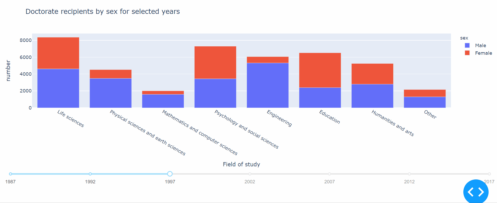
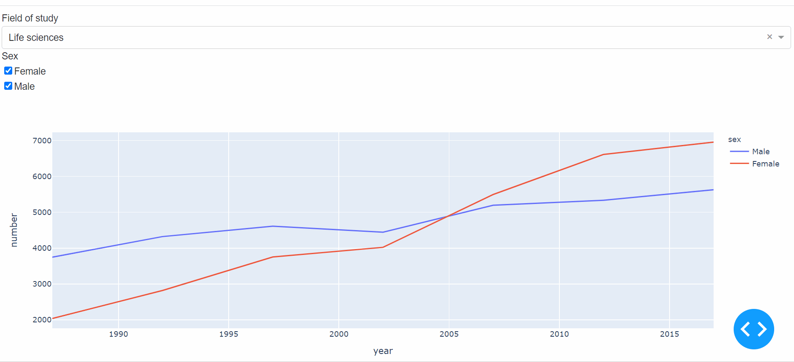
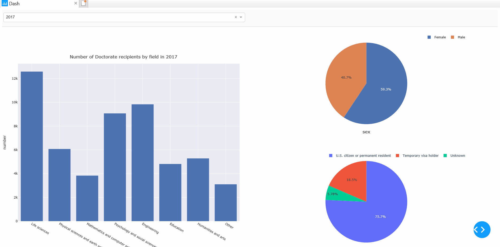

Dashboard for PhDs dataset

The task is to download data of PhDs awarded in the US. Do some analysis in pandas. Make a dashboard visualization of a few interesting aspects of the data using dash or streamlit. dataset: https://ncses.nsf.gov/pubs/nsf19301/data
1. Read the dataset and data cleaning
For this collection of datasets, I want to explore the number of doctorate recipients by major field of study, sex and citizenship in the selected years from 1987 to 2017.
Thus, I planed to explore table 14 and table 17.
import pandas as pd
import numpy as np
- Data cleaning for table 14
df1 = pd.read_excel('D:\\3.Duke\\course\\Year_2\\semester_1\\2_Bios823\\HW\\HW6\\data_tables\\sed17-sr-tab014.xlsx')
- Choose columnes that we are interested in.
df1 = df1.iloc[7:,[0,1,3,5,7,9,11,13]]
df1.columns = ['Field of study and sex','1987','1992','1997','2002','2007','2012','2017']
df1['Field of study and sex'][7] = 'Life sciences' ## rename some field names
df1['Field of study and sex'][28] = 'Other'
df1 = df1.reset_index().drop(columns=['index'])
df1['Field of study'] = df1.iloc[::3,0:1]['Field of study and sex'].repeat(repeats = 3).reset_index().drop(columns=['index'])
df1.head()
| Field of study and sex | 1987 | 1992 | 1997 | 2002 | 2007 | 2012 | 2017 | Field of study | |
|---|---|---|---|---|---|---|---|---|---|
| 0 | Life sciences | 5783 | 7141 | 8365 | 8465 | 10694 | 11949 | 12587 | Life sciences |
| 1 | Male | 3747 | 4322 | 4613 | 4443 | 5197 | 5335 | 5629 | Life sciences |
| 2 | Female | 2036 | 2819 | 3752 | 4022 | 5497 | 6614 | 6958 | Life sciences |
| 3 | Physical sciences and earth sciences | 3811 | 4486 | 4522 | 3871 | 4955 | 5414 | 6079 | Physical sciences and earth sciences |
| 4 | Male | 3177 | 3545 | 3489 | 2812 | 3447 | 3684 | 4068 | Physical sciences and earth sciences |
- Make the table tidy (into long form)
df2 = pd.melt(df1, id_vars=['Field of study and sex','Field of study'],var_name='year', value_name='number')
df2.loc[~df2['Field of study and sex'].isin(['Male','Female']),'Field of study and sex'] = 'All'
df2 = df2.rename(columns={"Field of study and sex": "sex"})
df2["number"] = df2["number"].astype(int)
df2["year"] = df2["year"].astype(int)
df2.head()
| sex | Field of study | year | number | |
|---|---|---|---|---|
| 0 | All | Life sciences | 1987 | 5783 |
| 1 | Male | Life sciences | 1987 | 3747 |
| 2 | Female | Life sciences | 1987 | 2036 |
| 3 | All | Physical sciences and earth sciences | 1987 | 3811 |
| 4 | Male | Physical sciences and earth sciences | 1987 | 3177 |
- Create a small subset that only contains overall information.
df2a = df2[df2['sex'] == 'All'].reset_index().drop(columns=['index'])
df2a.head()
| sex | Field of study | year | number | |
|---|---|---|---|---|
| 0 | All | Life sciences | 1987 | 5783 |
| 1 | All | Physical sciences and earth sciences | 1987 | 3811 |
| 2 | All | Mathematics and computer sciences | 1987 | 1189 |
| 3 | All | Psychology and social sciences | 1987 | 6063 |
| 4 | All | Engineering | 1987 | 3712 |
- Create a small subset that contains information by sex.
df2 = (
df2[df2['sex'].isin(['Male','Female'])].
reset_index().drop(columns=['index'])
)
df2.head()
| sex | Field of study | year | number | |
|---|---|---|---|---|
| 0 | Male | Life sciences | 1987 | 3747 |
| 1 | Female | Life sciences | 1987 | 2036 |
| 2 | Male | Physical sciences and earth sciences | 1987 | 3177 |
| 3 | Female | Physical sciences and earth sciences | 1987 | 634 |
| 4 | Male | Mathematics and computer sciences | 1987 | 999 |
- Data cleaning for table 17
The data cleaning for table 17 is similar to that of table 14.
df4 = pd.read_excel('D:\\3.Duke\\course\\Year_2\\semester_1\\2_Bios823\\HW\\HW6\\data_tables\\sed17-sr-tab017.xlsx')
df4 = pd.read_excel('D:\\3.Duke\\course\\Year_2\\semester_1\\2_Bios823\\HW\\HW6\\data_tables\\sed17-sr-tab017.xlsx')
df4 = df4.iloc[7:,:]
df4.columns = ['Field of study and citizenship','1987','1992','1997','2002','2007','2012','2017']
df4['Field of study and citizenship'][7] = 'Life sciences'
df4['Field of study and citizenship'][35] = 'Other'
df4 = df4.reset_index().drop(columns=['index'])
df4['Field of study'] = df4.iloc[::4,0:1]['Field of study and citizenship'].repeat(repeats = 4).reset_index().drop(columns=['index'])
df4['Field of study and citizenship'][7] = 'Life sciences'
df4['Field of study and citizenship'][35] = 'Other'
df5 = pd.melt(df4, id_vars=['Field of study and citizenship','Field of study'],var_name='year', value_name='number')
df5 = df5.rename(columns={"Field of study and citizenship": "citizenship"})
df5["number"] = df5["number"].astype(int)
df5["year"] = df5["year"].astype(int)
df5 = (
df5[df5['citizenship'].isin(['U.S. citizen or permanent resident','Temporary visa holder','Unknown'])].
reset_index().drop(columns=['index'])
)
df5.head()
| citizenship | Field of study | year | number | |
|---|---|---|---|---|
| 0 | U.S. citizen or permanent resident | Life sciences | 1987 | 4529 |
| 1 | Temporary visa holder | Life sciences | 1987 | 939 |
| 2 | Unknown | Life sciences | 1987 | 315 |
| 3 | U.S. citizen or permanent resident | Physical sciences and earth sciences | 1987 | 2657 |
| 4 | Temporary visa holder | Physical sciences and earth sciences | 1987 | 929 |
2. Create dashboard visualizations
Here I used the dash package to create dashboard in python.
import plotly.express as px
import jupyter_dash
from jupyter_dash import JupyterDash
import dash_core_components as dcc
import dash_html_components as html
from dash.dependencies import Input, Output
- Doctorate recipients by sex for selected years
For this chart, you can drag the slider to change the selected year.
external_stylesheets = ['https://codepen.io/chriddyp/pen/bWLwgP.css']
app = JupyterDash(__name__, external_stylesheets=external_stylesheets)
app.layout = html.Div([
dcc.Graph(id='graph-with-slider'),
dcc.Slider(
id='year-slider',
min=df2['year'].min(),
max=df2['year'].max(),
value=df2['year'].min(),
marks={str(year): str(year) for year in df2['year'].unique()},
step=None
)
])
@app.callback(
Output('graph-with-slider', 'figure'),
[Input('year-slider', 'value')])
def update_figure(selected_year):
filtered_df = df2[df2.year == selected_year]
fig = px.bar(filtered_df, x="Field of study", y="number", color="sex",
title="Doctorate recipients by sex for selected years")
fig.update_layout(transition_duration=500)
return fig
app.run_server(mode='inline',debug=True)

- The Trend of number of doctorate recipients by sex from 1987 to 2017
For the chart below, you can play with the dropdown box and checklist to interact with the figure.
external_stylesheets = ['https://codepen.io/chriddyp/pen/bWLwgP.css']
app = JupyterDash(__name__, external_stylesheets=external_stylesheets)
available_fields = df2['Field of study'].unique()
app.layout = html.Div([
html.Label('Field of study'),
dcc.Dropdown(
id='Field',
options=[{'label': i, 'value': i} for i in available_fields],
value='Life sciences'
),
html.Label('Sex'),
dcc.Checklist(
id='sex',
options=[{'label': i, 'value': i} for i in ['Female', 'Male']],
value=['Female', 'Male']
) ,
dcc.Graph(id='fields-graphic'),
])
@app.callback(
Output('fields-graphic', 'figure'),
[Input('Field', 'value'),
Input('sex', 'value')
])
def update_graph(field, sex):
dff = df2[df2['Field of study'] == field]
if sex == []:
fig = px.line()
elif (sex == ['Female']) or ( sex == ['Male']) :
fig = px.line(dff[dff['sex']== sex[0]], x="year", y="number")
else:
fig = px.line(dff, x="year", y="number", color='sex')
return fig
app.run_server(mode='inline',debug=True)

- Doctorate recipients by major field of study and their according sex and citizenship information summary
The charts below combine all the information in table 14 and table 17. When your mouse hover on the bar chart on the left, the sex and citizenship information in the according field will show on the right simultaneously.
external_stylesheets = ['https://codepen.io/chriddyp/pen/bWLwgP.css']
app = JupyterDash(__name__, external_stylesheets=external_stylesheets)
available_years = df2a['year'].unique()
app.layout = html.Div([
html.Div([
html.Div([
dcc.Dropdown(
id='year',
options=[{'label': i, 'value': i} for i in available_years],
value='2017'
),
],
style={'width': '49%', 'display': 'inline-block'})
], style={
'borderBottom': 'thin lightgrey solid',
'backgroundColor': 'rgb(250, 250, 250)',
'padding': '10px 5px'
}),
html.Div([
dcc.Graph(
id='allfield_barchart',
hoverData={'points': [{'label': 'Life sciences'}]}
)
], style={ 'width': '49%', 'display': 'inline-block', 'padding': '0 20'}),
html.Div([
dcc.Graph(id='sex-prop'),
dcc.Graph(id='citizen-prop'),
], style={'display': 'inline-block', 'width': '49%'})
])
@app.callback(
Output('allfield_barchart', 'figure'),
[Input('year', 'value')
])
def update_graph(year_value):
if year_value == None:
fig = px.bar()
else:
dff = df2a[df2a['year'] == int(year_value)]
fig = px.bar(dff, x="Field of study", y="number", template='seaborn',
title="Number of Doctorate recipients by field in %s" % year_value)
fig.update_layout(autosize= True, height=800 ,
margin={'l': 20, 'b': 40, 't': 40, 'r': 20}, hovermode='closest')
return fig
@app.callback(
Output('sex-prop', 'figure'),
[Input('allfield_barchart', 'hoverData'),
Input('year', 'value')
])
def update_sex_prop(hoverData, year_value):
if year_value == None:
fig = px.pie()
else:
field_name = hoverData['points'][0]['label']
dff = df2[ (df2['year'] == int(year_value)) & (df2['Field of study'] == field_name ) ]
#title = '<b>{}</b><br>{}'.format(country_name, xaxis_column_name)
fig = px.pie(dff, values='number', names='sex',template='seaborn')
fig.update_layout(legend=dict(orientation="h",
yanchor="bottom",y=1.02,
xanchor="right",x=1),
title={'text': "sex",'y':0.1, 'x':0.5})
return fig
@app.callback(
Output('citizen-prop', 'figure'),
[Input('allfield_barchart', 'hoverData'),
Input('year', 'value')
])
def update_sex_prop(hoverData, year_value):
if year_value == None:
fig = px.pie()
else:
field_name = hoverData['points'][0]['label']
dff = df5[ (df5['year'] == int(year_value)) & (df5['Field of study'] == field_name ) ]
#title = '<b>{}</b><br>{}'.format(country_name, xaxis_column_name)
fig = px.pie(dff, values='number', names='citizenship',template='plotly')
fig.update_layout(legend=dict(orientation="h",
yanchor="bottom",y=1.02,
xanchor="right",x=1),
title={'text': "citizenship",'y':0.1, 'x':0.5})
return fig
app.run_server(mode='inline',debug=True)
